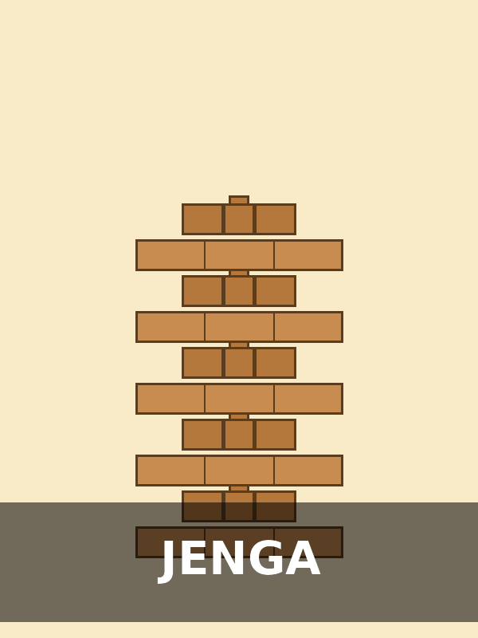

Jenga
Jugadores: 2 o más | Duración: 10 a 20 minutos
El clásico juego de habilidad y pulso firme: hay que retirar bloques de la torre de madera sin hacerla caer, y colocarlos arriba de todo. Perfecto para reuniones familiares o de amigos, genera tensión y risas por igual a medida que la torre se vuelve más inestable.
Descargar reglamento (PDF)